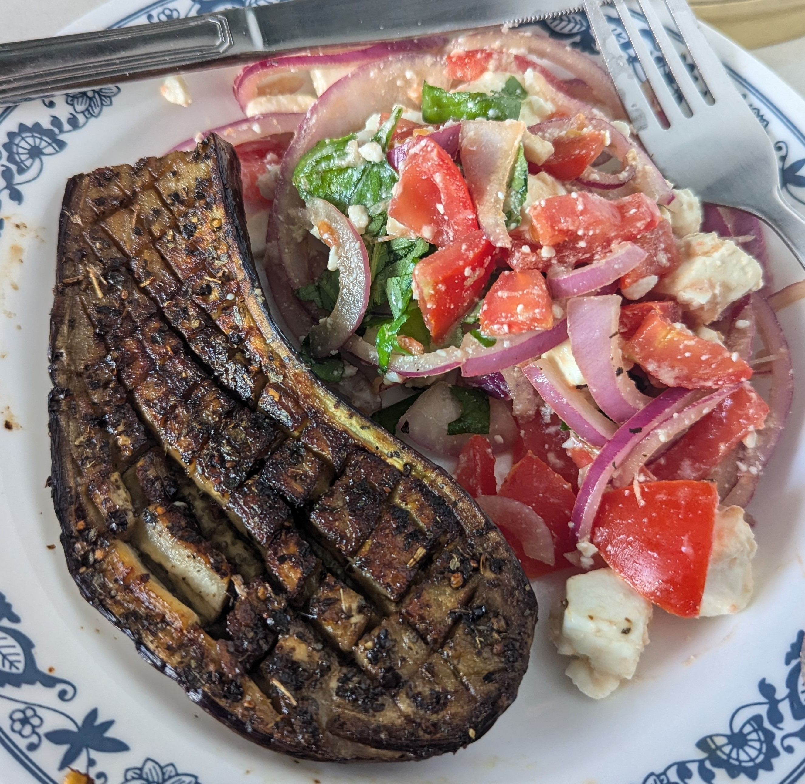

FRIED AUBERGINE AND SALAD
Ingredients
- 1 Aubergine
- 1 Pack of Feta
- 1/2 Large Red Onion
- Balsamic Vinegar
- Lemon Juice
- 2 Vine Ripened Tomatoes
Optional Ingredients
- Basil Leaves
Instructions
- Cut Aubergine in half
- Score each half of the aubergine
- Rub in salt and olive oil
- Rub in black pepper and a herb of choice (parsley)
- Add butter to the frying pan
- Once butter is somewhat melted, put Aubergine halves in (skin down)
- Wait 10m or so and flip it over
- Wait 10m or so and flip it over again
Second part of dish
- Cut red onion into fine strips
- Mix in Vinegar
- Cut and add in the tomatoes
- Mix in lemon juice
- Leave to sit until Aubergine is cooked
- Add in cubes of Feta
